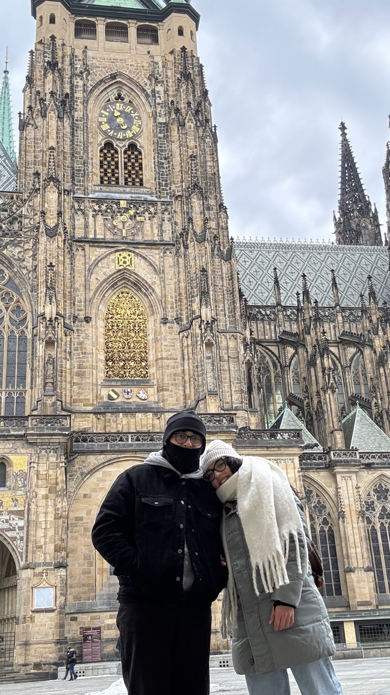
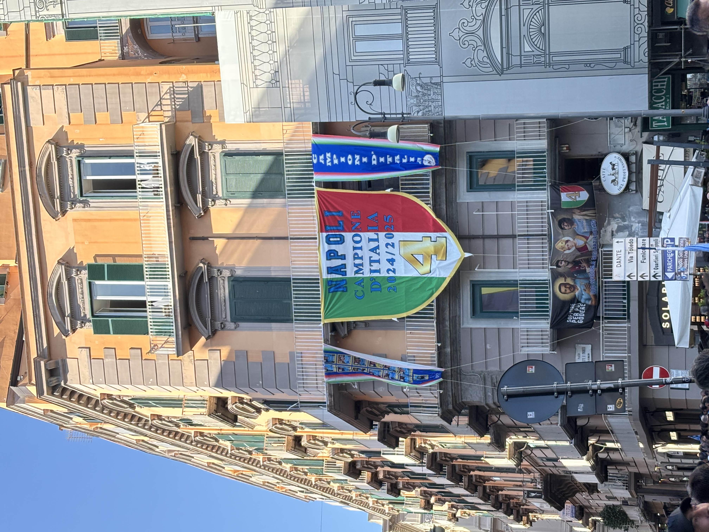
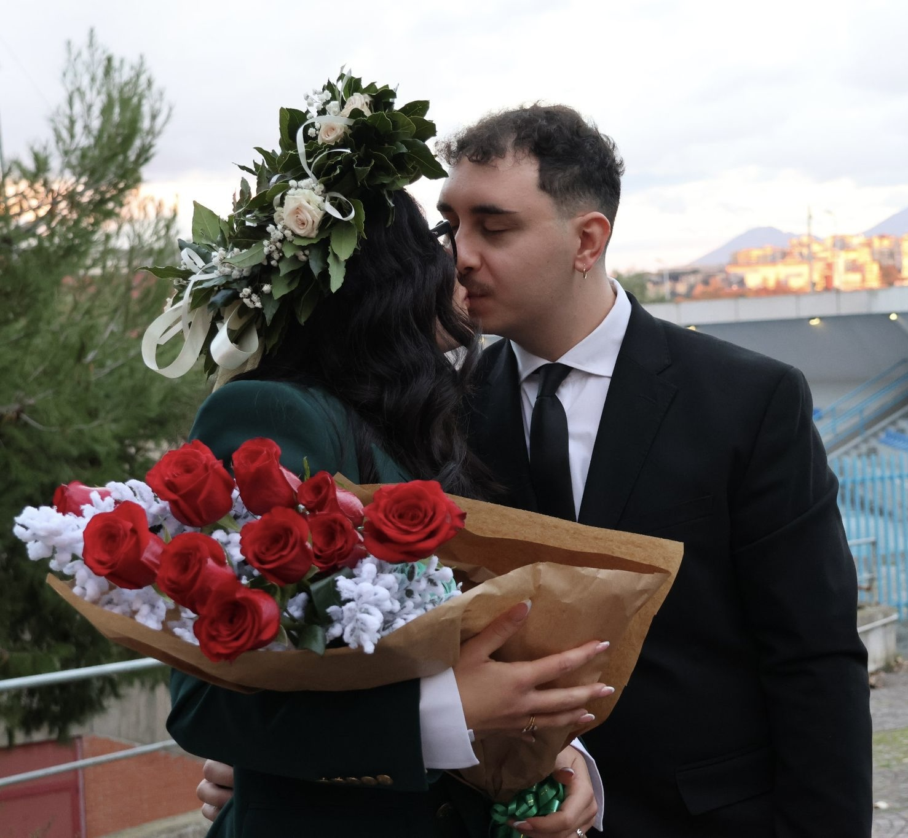

La nostra storia
2021 · Gennaio
Il nostro inizio
Il 24 gennaio 2021 è la data che ha cambiato tutto. Da quel giorno la vita ha preso i colori più belli.
2021 — 2024 · Ogni stagione
Tramonti al mare
Portici, Licola, il Golfo di Napoli che si tinge di arancione. Certi momenti non hanno bisogno di parole — solo te, io, e il mare davanti.

2025 · Gennaio
Praga — il primo viaggio
Il nostro primo viaggio all'estero insieme. Praga d'inverno, con la neve e le stradine di pietra, come in una favola.

2025 · Maggio
4° Scudetto del Napoli 🔵⚽
Un momento storico vissuto insieme. Le strade di Napoli, l'urlo, la gioia — certe emozioni si moltiplicano quando le condividi con la persona che ami.

2025 · Ottobre
Barcellona — sole e mare
La prima volta a Barcellona, tra la Sagrada Família, il Barceloneta e il tramonto sul Mediterráneo.
2024 · Dicembre
La sua laurea in Matematica 🎓
Tre anni di esami, notti a studiare, momenti di sconforto — e io lì, ogni volta. Il giorno della laurea è stato anche un po' il mio. Sono così fiero di te, Martina.

2026 · Gennaio
4 anni & Barcellona di nuovo
Per il nostro quarto anniversario, siamo tornati nella nostra Barcellona. Perché certi posti diventano casa quando ci sei con la persona giusta.